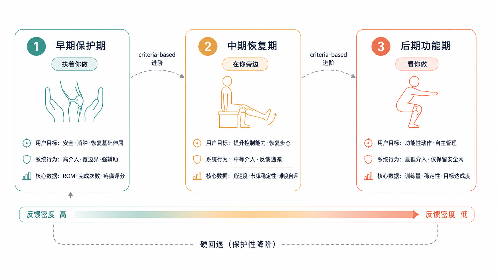

Listening with the Brace
远程膝关节康复 · 主动力反馈外骨骼 + Eyes-free 多通道交互探针
诊所与家里，物理一样
差距只在陪伴见证
CH.1 · 问题陈述
ACL 术后 12 周家庭康复方案的依从率
坚持率随时间持续下滑。
Source: Dun21 / Hoh23 (estimated)
"我做这个，
有意义吗？" —— 家庭康复用户的真实独白
动作不一定错。错的是没有人在场。
Visual-first dashboard
把康复变成数字仪表，越显示越孤独
已有 App 的主流范式
"你真棒！
再坚持一下！" —— 拟人化加油语
头像在笑，但用户在独自承担动作
鼓励语无法替代在场。
缺的不是测量，
不是提醒，不是数据。
把陪伴，
做进硬件与多通道里
不是 App 在加油，是物体本身在"听"
-
01 · 硬件
主动力反馈外骨骼可调度反馈频谱
-
02 · 范式
Eyes-free 多通道叙事声音 / Presence
-
03 · 证据
N=4 设计探针陪伴 vs 监视的边界
本工作的三条贡献
-
01
可调度反馈频谱
主动外骨骼承载 8 种力反馈模式 + 安全底线；硬件可被软件按阶段、按动作调度
-
02
Eyes-free + 叙事声音
屏幕降级为"反思窗口"；力反馈、触觉、声音协同承担陪伴语气
-
03
设计探针
N=4 设计探针证明非拟人化共情可达；同时识别"陪伴 / 监视"边界
Roadmap
三条贡献 分别对应章节 SYSTEM / PARADIGM / PROBE
-
CH.1
HELLO
问题命名
-
CH.2
SYSTEM
硬件 + 调度
-
CH.3
PARADIGM
Eyes-free
-
CH.4
PROBE
N=4 探针
-
CH.5
DISCUSSION
立场与边界
NEXT
陪伴怎么变成 硬件可以承担的事？
SYSTEM
从一个会按阶段调度的力反馈频谱说起
SYSTEM
主动外骨骼 + 可调度反馈频谱
接下来要回答 三件事
-
① · 硬件
硬件能不能承担足够丰富的力反馈？
-
② · 调度
力反馈能不能被软件按阶段调度？
-
③ · 分工
多设备如何分工？
四节点系统
支具承担力反馈；手机/手表承担触觉与音；Mac 做日级聚合与阶段判定

Fig 2-2 · 多设备分工架构
Brace BOM
电机驱动 + IMU 测姿 + MCU 调度 + 双链路通信
-
H · 01
无刷电机
峰值扭矩 12 N·m · FOC 闭环
-
H · 02
双 IMU
大腿 + 小腿 · 200 Hz · 重力向量法
-
H · 03
MCU 控制器
主环 1 kHz · 反馈帧 50 Hz
-
H · 04
通信链路
BLE 握手 · UWB 实测 4 Mbps
三个数字
控制环的实测指标
支具→主机的状态刷新
实测高吞吐通信带宽
外骨骼姿态 vs 光学参考
HARD · 角度墙 / 硬刹
在医生设定的安全角度边界外，电机进入位置环虚拟墙模式 — 提供物理刚度阻止越界
- ·响应时间 < 20 ms（< 1 反馈帧）
- ·支持反应性急停（IMU 跌倒预测）
- ·越界回弹路径柔顺，避免猛拉
两种边界
物理刚度 与 柔顺阻尼
物理刚度
用户撞上"墙"。 无可妥协的安全约束
- · 越界角度
- · 跌倒预测
- · 反应性急停
柔顺阻尼
用户感到"被托住"。 可商量的柔性引导
- · 缓停
- · 弹性辅助
- · 路径引导
SOFT · 缓停 + 弹性辅助
SOFT 区段不是物理墙，而是一段被精心调谐的阻尼曲线 — 让用户在接近边界时"感到被托住"
- ·缓停：进入末端 15° 时阻尼指数增长
- ·弹性辅助：抗重力相位提供 30~60% 助力
- ·所有参数随阶段自动重设
八种力反馈模式
软件按阶段 + 动作类型自动调度
角度墙
医生设定的角度边界外，电机给出物理刚度
不可越界 — 安全约束的硬底线
-
阶段
早期 · 中期 · 后期
-
响应
< 20 ms
-
语义
"不可以"
缓停
在末端 15° 阻尼指数增长。用户感到"被托住"，而不是撞上墙
-
阶段
早期 → 中期
-
阻尼曲线
指数 · 末端 15°
-
语义
"慢一点"
持续阻力
整段动作叠加恒定阻尼。用于力量训练阶段 — 等张性收缩、向心 / 离心负荷
-
阶段
中期 · 后期
-
阻力档位
2 · 4 · 6 N·m
-
语义
"更稳一点"
弹性辅助
抗重力相位给予 30~60% 助力。让早期用户也能完成全幅动作 — "被托住"的物理感受
-
阶段
早期 主力
-
助力曲线
弹簧 · 抗重力相位
-
语义
"我托着你"
路径引导
在标准轨迹两侧布置低强度回正力。让支具"轻轻带你走"，但不替你做
-
阶段
中期
-
回正强度
0.5 ~ 1.5 N·m
-
语义
"这边走"
触觉提示
电机以极短脉冲产生振动，替代视觉的低带宽事件提示 — 完成、转换、注意
-
阶段
全阶段
-
脉冲
30 / 80 / 150 ms
-
语义
"留意一下"
节律辅助
在动作节拍点给出微推 / 振动。用于节律性步态训练 — "跟拍"
-
阶段
后期 · 步态
-
节拍范围
60 ~ 110 bpm
-
语义
"跟着我"
扰动训练
不可预测的微小扰动力，激发神经肌肉适应。后期阶段独有，用于平衡与本体感觉恢复
-
阶段
后期 · 强化
-
扰动幅度
0.3 ~ 1.0 N·m · 随机
-
语义
"接住我这一下"
反应性急停 + 预测性缓停
安全的底线 永远在线
IMU 检测到失衡 / 越界趋势时， 独立于任何模式触发；其它八模式均可被覆盖
CH.2 · 安全凌驾一切
谁来选模式？
软件按阶段 + 动作类型自动选； 急停永远凌驾
重力向量法 vs 传统融合
仅在动态摆动相做低通；准静态相位结果即真实关节角
9 轴 IMU 融合
陀螺仪积分易累积 yaw drift；磁力计在室内受干扰；需要每小时校准
仅用加速度计
关节角直接从大腿/小腿加速度向量夹角解算；不依赖陀螺积分，无累积漂移
位置环 + 虚拟墙参数注入
模式表只是修改 K_wall(θ) 与助力增益曲线；硬件层不需要重新部署
每个设备 承担什么？
支具不需要在意"在哪个设备旁"；任意子集都能跑出最小可用流程
-
D · 01
BRACE
承担力反馈本体。 八模式 + 安全急停。 50 Hz 状态上报
-
D · 02
iPHONE
主控。 调度模式 / 维持训练时序 / 反思窗口呈现
-
D · 03
WATCH
触觉副通道。 心率与运动强度感知。 Presence 0/1 层载体
-
D · 04
MAC
后台聚合。 日级 / 周级数据分析；阶段过渡判定
三种时间尺度， 三种调度

- 阶段 · 数周 Mac · 后台聚合判定
- 训练日 · 20~40 min iPhone · 时序与反思
- 动作 · 2~4 s MCU · 实时模式与急停
Fig 2-3 · 早期 / 中期 / 后期 — 阶段切换是大事件，需要仪式
三种过渡
不是闯关，是阶段过渡 — 必须被仪式化
-
①
进阶
"你过去这一周稳定。我们今天进入下一阶段。" 力反馈减助力 + 触觉确认
-
②
软回退
"今天我们走慢一点。" 不下调阶段，临时收紧本日参数
-
③
硬回退
"我们回到上一阶段做几天。" 阶段下调 + 必须本人确认
所有过渡都附带"返回路径承诺"：清楚地说明回来的条件
训练前的"对齐时刻"
训练准备页不展示数据， 只问一件事：今天我们做哪一组？
- · 当前阶段 + 本日剧本
- · 可选的"软回退"开关
- · 力反馈预览（震动一次）

Fig 4-4 · 训练准备页原型 — 视觉信息在动作开始前到位，动作开始后即退场
训练中的"反思窗口"
动作进行中，屏幕只承担"事后反思"
- · 不显示实时关节角
- · 不显示心率波形
- · 只显示上一次完成的"语气标签"
Fig 4-5 · 训练执行界面原型 — 屏幕被允许"什么都不说"
数据何时被看见？
所有数据停留在用户的家。 Mac 是本地汇聚点
"今天我们走慢一点。"
软回退 不必道歉
软回退由系统主动提出。 用户接受 = 默认； 拒绝也不被惩罚
触发条件：连续两日完成率下降、 心率不达基线、 自评分跌出常态
DONE
硬件能做的， 已经有了
NEXT · EYES-FREE
下一个问题：它"怎么说话"？
EYES-FREE
多通道交互范式 · 叙事声音 · 非拟人化共情
范式要回答 三件事
-
① · 屏幕
屏幕该承担什么？又不该承担什么？
-
② · 语气
力反馈能不能承担"语气"？
-
③ · 共情
不靠头像， 还能不能产生共情？
动作进行中，
任何视觉信息， 都不应该是必要的
—— Eyes-free 范式的底线
三个通道 分担一种语气
三通道协同 = 一种 Presence。 任何单通道都不足以独自承担陪伴语气

-
CH · 01
力反馈
承担"在场感" — 引导、托举、阻尼、急停
-
CH · 02
触觉
承担"留意感" — 完成、转换、提示
-
CH · 03
声音
承担"叙事感" — 极少出现，出现即语义
Fig 4-1 · 四通道反馈架构
屏幕从主角 退到反思位
反馈通道
- · 实时关节角折线
- · 实时心率仪表
- · 计时器 / 计数器
- · 鼓励语弹窗
反思窗口
- · 训练前：今天做哪一组？
- · 训练后：刚才发生了什么？
- · 阶段切换的仪式承担
- · 训练中：什么都不显示
六个核心词汇
"今天我们走慢一点。"
不下调阶段， 只松紧本日参数
-
力反馈
↓ 助力
-
触觉
一次确认
-
声音
一句陈述（可关）
不是闯关， 是阶段过渡
系统在用户启动当日训练时主动陈述："你过去这一周稳定。 今天我们进入下一阶段。"
-
力反馈
减助力 10~20%
-
触觉
3 拍渐强脉冲
-
声音
一句话陈述
"做到 N 次稳定， 就回来。"
每次回退都附带返回的条件
回退不是被惩罚， 它是"我们一起再走一遍"的明示
七维参数 × 三阶段
力反馈随阶段反转
同一硬件，从"托你"演化到"挑战你"
"被托住"的最大态
无助、无阻；只剩引导
挑战 · 扰动 · 加载
触觉随阶段稀疏化
从"持续陪伴"演化到"在重要时刻才出现"
每个动作起止 / 转换都有提示
只在阶段切换 / 节拍点出现
仅在仪式 / 里程碑时刻
Presence 在阶段间 由稠密走向稀疏
在场感不是越多越好。 早期用户需要被持续承接； 后期用户需要相信自己
所有四层都仍在线，但被调到不同频率与幅度
Voice-bearing
force feedback.
力反馈不仅传递参数，也传递语气。 托举的弧度本身就是一种"听到了"
力反馈的七种"语气"
七种语气都不依赖头像，也不依赖语言
-
T01
托举
弹性辅助 · "我在"
-
T02
引导
路径回正 · "这边"
-
T03
商量
缓停曲线 · "慢一点"
-
T04
挑战
持续阻力 · "再多一点"
-
T05
惊醒
扰动 · "接住这一下"
-
T06
承认
里程碑舒展 · "看见你了"
-
T07
禁止
硬墙 + 急停 · "不可以"
- 七种语气 不依赖头像 也不依赖语言
三阶段， 三种主导语气
托举为主
弹性辅助是主语气
"你不必一个人扛。"
触觉密集 · 屏幕承担安抚
引导为主
路径引导是主语气
"我陪你走，但不替你走。"
触觉中等 · 屏幕只在节点
挑战为主
扰动 + 节律是主语气
"我相信你。"
触觉稀疏 · 屏幕仅反思
不是头像， 是支具的姿态演化
拟人化共情
- · 动画头像表情
- · "你真棒"语音
- · 庆祝彩带
- · 拟声虚拟教练
借用人类外观，承担不了人类在场
非拟人化共情
- · 力反馈语气的可感变化
- · Presence 四层的呼吸节律
- · 阶段切换的物理仪式
- · 软回退的不批评陈述
物体不假装是人，但承担了"在场"
为什么"加油语" 越说越孤独？
-
F · 01
语言承诺了它做不到的事
"你真棒"是评价者的语气；但 App 不在用户的物理空间
-
F · 02
不能在动作进行时被消费
视觉鼓励需要看屏。 看屏 = 离开本体感觉
-
F · 03
重复后变成噪音
第 100 次"很棒"读起来像第 1 次的反讽
在场感的四层
-
P0
第 0 层 · 呼吸
恒在的底层节律
-
P1
第 1 层 · 关注
动作时的留心
-
P2
第 2 层 · 转身
阶段过渡的庄重
-
P3
第 3 层 · 回应
里程碑时的承认
第 0 层 · 呼吸
支具空闲时的极低频微振动（< 0.5 Hz）。 不传递信息 — 只传递"我还在"
- · 用户随时可关
- · 默认夜间静默
- · 不进入数据上送
第 1 层 · 关注
动作开始时支具姿态紧致一点。 用户感受："它知道我开始了。"
- · 阻尼基线 +5%
- · Watch 触觉一次轻拍
- · 屏幕不亮
第 2 层 · 转身
阶段过渡时支具做一次完整的"姿态切换"。 它不再只是听见，它"看向"用户
- · 3 拍触觉渐强
- · 力反馈参数集切换
- · 仅在仪式发生时出现
四层一起， 才是 Presence
- P0 第 0 层 · 呼吸
- P1 第 1 层 · 关注
- P2 第 2 层 · 转身
- P3 第 3 层 · 回应
-
四层不是开关，是音量旋钮。 不同阶段调到不同位置
不是物体在假装是人，
是物体在听
—— 非拟人化共情的设计立场
反思窗口的真实界面
不显示任何实时波形。 只承担"昨天发生了什么 / 今天打算做什么"
- · 阶段图卡（这是当前阶段）
- · 上次训练的语气标签
- · 今天的可选剧本
- · 软回退按钮（不显眼）

Fig 4-3 · 首页原型 — 屏幕不替支具说话
范式做了三件事
Eyes-free
动作进行中，视觉不必要。 屏幕降级为反思窗口
叙事声音
力反馈承载语气； 触觉与声音补足节奏与陈述
Presence
四层在场感同时在线； 非拟人化共情可达
DESIGN DONE
设计完了 能不能被感受到？
NEXT · DESIGN PROBE
用 N=4 设计探针检验我们的范式假设
DESIGN PROBE
N=4 · 质性为主 · 拉丁方平衡设计
我们用 probe， 不是为了证明
设计探针不是验证假设的工具， 而是把假设放进真实情境， 看用户用什么样的语言重新讲述这件事
-
·
不报告"陪伴是否成立"的客观指标
-
·
报告"陪伴 vs 监视"的边界在哪些情境出现
-
·
报告范式语言进入用户日常的方式
C2a / C2b / C2c
变量是反馈范式； 不变的是硬件、阶段、训练剧本
Visual-first
屏幕承担主反馈， 力反馈仅承担安全约束
复刻已有 App 范式
力反馈 only
屏幕静默， 仅力反馈八模式 + 急停
检验 Eyes-free 的纯度
多通道范式
力反馈 + 触觉 + 反思窗口， Presence 四层在线
完整本工作范式
拉丁方平衡 · 顺序效应消除
3 × 4 拉丁方 — 4 名被试，每人体验三条件，顺序平衡
每日任务三段式
情境定标
自评心情 / 身体状态 / 当日剧本选择。 视频问候 + 半结构对话
在条件下的训练
按当日条件（C2a/b/c）完成剧本。 研究者不在场，只录像音
半结构访谈
复盘三个钩子问题， 记录用户对反馈通道的"重新讲述"
陪伴 vs 监视，
边界是存在的
"Presence 多到一定程度， 就开始像监控。"
这条边界， 我们在 Discussion 展开
DATA IN HAND
从这里， 我们能学到什么？
NEXT · DISCUSSION
不止是结论。 三条钩子， 重新打开了三个问题
DISCUSSION
三个钩子 · Limitations · Future work
三个钩子
Eyes-free 是康复手段
不是 UX 选择， 是本体感觉恢复的物理通路
非拟人化共情
力反馈作为"语气"载体， 物体能在场而不假装是人
陪伴 / 监视的边界
Presence 多到一定程度即越界， 这条边界要被明示
Eyes-free 是康复手段
不只是 UX 偏好
Eyes-free
是康复手段
视觉持续占用意味着本体感觉持续被遮蔽。康复要的恰好是让本体感觉回到主导地位
-
证据
用户在 C2b/C2c 条件下报告"更知道自己腿在哪里"
-
理论
本体感觉训练在 ACL 康复文献中是后期独立目标
-
立场
Eyes-free 不是去除屏幕， 是不让屏幕代替身体
非拟人化共情
作为设计立场
非拟人化共情
力反馈承担"语气"， 而不是头像承担情绪。 "陪伴感"不再依赖语言的承诺， 而依赖物理的承接
-
为什么必要
拟人化在长周期使用中失效： 第 100 次"你真棒"是反讽
-
为什么可行
力反馈的语气是连续可调的， 不会被重复消耗
-
设计含义
让设备承担物理的"在场"， 而不是模仿人类的"温暖"
陪伴 / 监视的边界
一条诚实的发现
陪伴 / 监视的边界
"它好像在看着我做。" — 当 Presence 第 3 层频率超过特定阈值， "陪伴"被用户重新命名为"监视"
-
现象
高 Presence + 频繁里程碑反馈 → 用户感到被注视
-
设计含义
Presence 的"音量"需用户可调； 默认值需保留克制
-
伦理
数据本地化、 明示采集、 可断电 — 都是必要条件
我们没做到什么
N=4
样本量为设计探针级别， 不支持效度推断
单中心
所有被试来自同一术后人群， 未覆盖运动员 / 老年
短周期
每人体验 3 天， 长周期的语气疲劳未被检验
接下来的两个方向
长周期家用部署
≥ 12 周的真实家庭场景测试， 检验语气在长周期是否仍然有效
- · 跨阶段调度的实证
- · 用户自定义 Presence 音量
多模态 LLM 的介入边界
语音 + 视觉理解可以接入， 但要明确什么时候不该说话
- · 介入时机的伦理约束
- · 与非拟人化立场的兼容
Thanks to
张娟
三年的指导， 每次方向修正都恰当
工业设计系
老师的帮助，自由发挥的土壤
四位被试
愿意把康复中最脆弱的时刻交给一个原型
Listening with the Brace.
-
01
可调度反馈频谱
硬件 — 八模式 + 安全底线， 软件按阶段调度
-
02
Eyes-free + 叙事声音
范式 — 力反馈承担语气， 屏幕降级为反思窗口
-
03
设计探针
证据 — 非拟人化共情可达； 陪伴 / 监视边界存在
Thank You
王盛逸 · 北京工业大学工业设计系
shengyihappy@163.com
scan to read the paper / project notes